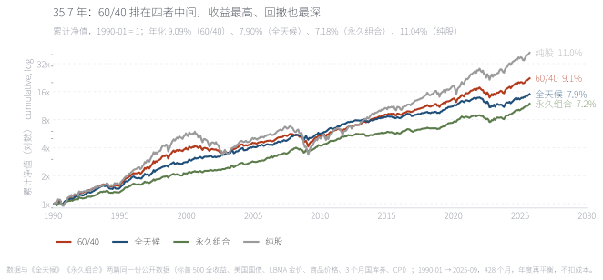
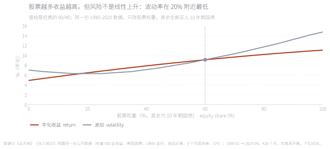
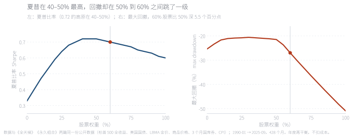
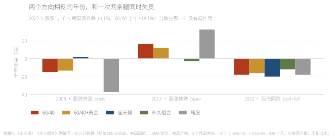
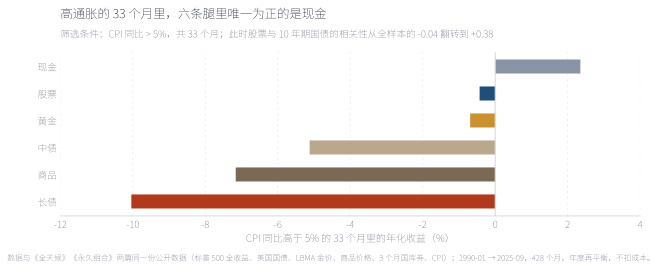
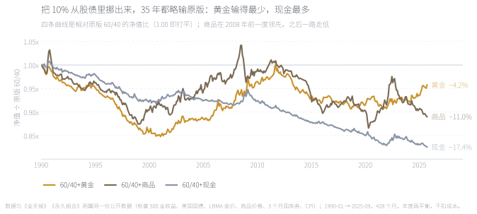
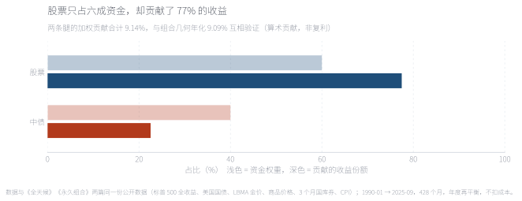
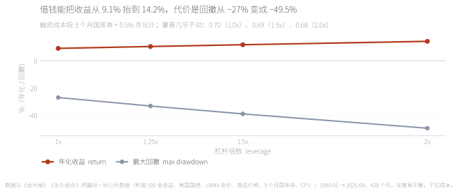
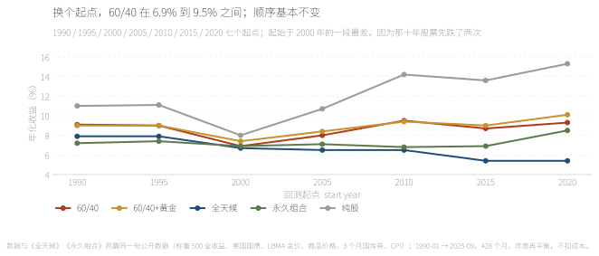

60% 股票 + 40% 债券，大概是投资界最有名的一条配置规则，也是最多人被默认分配的那一个。用 1990-01 至 2025-09 共 428 个月的美国数据把它跑一遍：年化 9.09%、波动 9.1%、最大回撤 −27.0%、夏普 0.70。它是一个不容易被打败的默认值，但它既不是最好的那一个（永久组合的夏普是 0.75），也不是它自己宣称的那一个——真正击败它的是 2022 年，股票与债券同时下跌。60% 这个数字本身也值得怀疑：把股票权重扫一遍会发现，夏普的最高点在 40–50%，而最大回撤在 50% 到 60% 之间跳了一级。 Sixty per cent equities, forty per cent bonds — probably the most famous allocation rule in investing, and the one most people are defaulted into. On 428 monthly US observations from January 1990 to September 2025 it returned 9.09% a year with 9.1% volatility, a −27.0% maximum drawdown and a Sharpe ratio of 0.70. It is a hard default to beat, but it is neither the best portfolio available (the Permanent Portfolio's Sharpe is 0.75) nor the one it advertises: what actually broke it was 2022, when stocks and bonds fell together. The number 60 itself is questionable — sweep the equity weight and the Sharpe ratio peaks at 40–50%, while the maximum drawdown jumps a level between 50% and 60%.
问题60% 股票 + 40% 债券是最广为人知的配置规则，但它既没有提出者也没有理论基础。本文检验它三件事：60% 这个比例是不是最优点；它在什么条件下整体失效；最便宜的修补是什么。
环境1990-01 至 2025-09 共 428 个月的美国数据，与前两篇组合实测同一份管线（标普 500 全收益、美国国债收益率曲线、LBMA 金价、世界银行商品价格指数、3 个月国库券、BLS CPI）。年度再平衡，不扣交易成本；杠杆情景的融资成本按 3 个月国库券 + 0.5% 年化计。
结果60/40 年化 9.09%、波动 9.1%、最大回撤 −27.0%、夏普 0.70。夏普的最高点在股票权重 40–50%（0.72），最大回撤的低原也在同一段；60% 相对 50% 多赚 0.6 个百分点，却多亏 5.5 个百分点的回撤。把股票权重扫到 0% 与 100%，年化从 4.91% 单调升到 11.04%，夏普与回撤却都不是单调的。
失效场景全样本里股票与 10 年期国债的相关性是 −0.04，但在 CPI 高于 5% 的 33 个月里是 +0.38；428 个月里有 56 个月（13.5%）两条腿同时下跌，2022 年最极端（各 −18.1%）。
修补与杠杆把 10% 挪给黄金，夏普从 0.70 升到 0.76、回撤从 −27.0% 收到 −22.7%，代价是 0.13 个百分点年化；挪给商品更差，挪给现金基本中性。杠杆把年化抬到 10.44% / 11.75% / 14.24%（1.25× / 1.5× / 2×），夏普却降到 0.69 / 0.69 / 0.68。
边界样本从 1990 年开始，不含 1970 年代；债券用收益率曲线按固定久期合成，不是真实基金净值；黄金用 LBMA 现货价，不含持有成本；全部是美国资产，未计汇率、税费与交易成本。
QuestionThe 60/40 — sixty per cent equities, forty per cent bonds — is the most widely held rule in asset allocation, and it has no author and no theory. This note tests three things about it: whether 60% is the best point on the curve, under what conditions it fails as a whole, and what the cheapest fix is.
Setting428 monthly US observations from January 1990 to September 2025, using the same pipeline as the two earlier portfolio studies (S&P 500 total return, the US Treasury yield curve, the LBMA London gold price, the World Bank commodity price index, three-month T-bills and BLS CPI). Annual rebalancing, before transaction costs; leverage is funded at three-month T-bills plus 0.5% a year.
ResultsThe 60/40 returned 9.09% a year with 9.1% volatility, a −27.0% maximum drawdown and a Sharpe of 0.70. The Sharpe ratio peaks at an equity weight of 40–50% (0.72) and the drawdown plateau lies in the same band; moving from 50% to 60% adds 0.6 points of return and 5.5 points of drawdown. Sweeping the equity weight from 0% to 100%, the return rises monotonically from 4.91% to 11.04% while both Sharpe and drawdown are non-monotonic.
Where it breaksThe full-sample correlation between equities and ten-year Treasuries is −0.04, but across the 33 months with CPI above 5% it is +0.38. In 56 of 428 months (13.5%) both legs fell at once; 2022 was the extreme case, at −18.1% each.
Fix and leverageMoving 10% into gold lifts the Sharpe ratio from 0.70 to 0.76 and cuts the drawdown from −27.0% to −22.7% for 0.13 points of return; commodities are worse and cash roughly neutral. Leverage lifts the return to 10.44% / 11.75% / 14.24% at 1.25× / 1.5× / 2× while the Sharpe falls to 0.69 / 0.69 / 0.68.
LimitsThe sample starts in 1990 and excludes the 1970s; bonds are synthesised from the yield curve at fixed duration rather than taken from fund NAVs; gold is the LBMA spot price without carry; everything is US, and exchange rates, taxes and transaction costs are ignored.
关键词 60/40 · 资产配置 · 再平衡 · 股债相关性 · 最大回撤 · 黄金Keywords 60/40 · asset allocation · rebalancing · stock-bond correlation · maximum drawdown · gold
60/40 没有提出者，也没有一本书。它是一条从实践里沉淀出来的默认值：六成股票、四成债券，每年调回这个比例，其他什么都不做。它流行的原因不是回报最高，而是它在两个方向上都不过分——股票提供了几乎全部的长期收益，债券把那部分收益的波动削掉一半。
先看一条算术。如果股票长期年化 11.0%、10 年期国债 4.9%，两者相关性接近零，那么 60/40 的算术年化大约是 0.6 × 11.0% + 0.4 × 4.9% = 8.5%。实际跑出来的 9.09% 比这个高。差额来自再平衡：每年把涨多的那条腿卖掉一点、买回跌的那条腿，等于在做一件幅度很轻微、但完全不需要判断的低买高卖。
所以本文要检验的不是「分散化有用」——那是算术；而是三个具体问题：（一）60% 这个数字是不是风险收益的最优点？（二）它在什么条件下会整体失效？（三）如果失效，最便宜的修补是什么？
Nobody invented the 60/40 and nobody wrote its book. It is a default that accumulated out of practice: sixty per cent equities, forty per cent bonds, reset to that ratio once a year, and nothing else. It became the default not because it earns the most but because it is not extreme in either direction — equities supply almost all of the long-run return, and bonds cut the volatility of that return roughly in half.
Start with the arithmetic. If equities compound at 11.0% and ten-year Treasuries at 4.9% with a correlation near zero, a 60/40 should earn about 0.6 × 11.0% + 0.4 × 4.9% = 8.5%. It actually delivered 9.09%. The difference comes from rebalancing: selling a little of whichever leg ran and buying back the one that fell is a very mild form of buy-low-sell-high that requires no forecasting at all.
So the question is not whether diversification works — that is arithmetic. It is three specific questions: (1) is 60% the best point on the risk/return curve? (2) under what conditions does the whole thing fail at once? (3) if it fails, what is the cheapest fix?
样本为 1990-01 至 2025-09 共 428 个月，与《全天候组合实测》《永久组合实测》完全同一份公开数据：股票＝标普 500 全收益；债券＝10 年期美国国债（按久期 7.5 用收益率曲线合成）；另有 30 年期长债、LBMA 伦敦金价、世界银行商品价格指数与 3 个月国库券。组合按年度再平衡：每年 1 月重置回目标权重，年内让权重随价格漂移。
三处口径一开始就要写明。第一，不扣交易成本；60/40 的年换手率只有 3.7%，实际摩擦很小，而加黄金会把它抬到 4.0%。第二，杠杆情景的融资成本按 3 个月国库券 + 0.5% 年化计，约等于历史上券商融资成本的下限，并且假设不存在强平。第三，所有债券都用收益率曲线合成，不是真实基金净值——这不改变结论的方向，但会让数字比真实账户略干净。
还做了一个很少被画的检验：把股票权重从 0% 每 5 个百分点扫到 100%，其余全部买入 10 年期国债。21 个组合、同一份数据、同一条规则，唯一的变量就是那个数字。第 04 节的两张图就是这次扫描。
The sample is 428 monthly US observations from January 1990 to September 2025, on exactly the same public data as the All Weather and Permanent Portfolio studies: equities are the S&P 500 total return; bonds are ten-year Treasuries synthesised from the yield curve at duration 7.5; alongside them sit 30-year Treasuries, the LBMA London gold price, the World Bank commodity price index and three-month T-bills. Portfolios are rebalanced annually: weights reset each January and drift with prices within the year.
Three conventions are worth stating up front. First, transaction costs are excluded; the 60/40 turns over about 3.7% a year, so the real friction is small, and adding gold lifts it only to 4.0%. Second, leverage is funded at three-month T-bills plus 0.5% a year, roughly the floor of historical broker financing, and no margin call is assumed. Third, bonds are synthesised from the yield curve rather than taken from fund NAVs — this does not change the direction of any conclusion but makes the numbers slightly cleaner than a real account.
One rarely drawn check is also included: sweeping the equity weight from 0% to 100% in five-point steps, with everything else in ten-year Treasuries. Twenty-one portfolios, one data set, one rule, and a single variable. The two charts in section 04 are that sweep.
先把基准放上桌。35.7 年里 1 元变成 22.3 元：年化 9.09%、波动 9.1%、最深的回撤 −27.0%（2007-10 到 2009-02，共 16 个月）、夏普 0.70。
它落在三个对比组合的中间。纯股赚得最多（11.04%）但波动也最高（14.7%）、回撤 −50.9%；永久组合和全天候赚得少（7.18%、7.90%），路径却平得多（回撤 −15.5%、−21.7%）。如果问题只是「哪个组合风险调整后最好」，答案不是 60/40——永久组合的夏普是 0.75，比它高，波动只有它的三分之二。

对数刻度，斜率就是年化增速。60/40（红）的终值居中：1 元变成 22.3 元，纯股 41.9 元，全天候 15.1 元，永久组合 11.9 元。这张图里 60/40 的位置很典型——它赚得比两个防御型组合多，波动和回撤也明显更深：2000–2002、2008、2020、2022 每一次它都跟着跌，而永久组合在 2008 年几乎不走样。
On a log scale the slope is the growth rate. The 60/40 (red) ends in the middle: 1 unit becomes 22.3, against 41.9 for equities, 15.1 for All Weather and 11.9 for the Permanent Portfolio. Its position is the familiar one — it earns more than the two defensive portfolios and carries visibly more volatility and drawdown: it fell in 2000–02, 2008, 2020 and 2022, while the Permanent Portfolio barely broke stride in 2008.
来源：本文回测，1990-01 → 2025-09 共 428 个月，年度再平衡，不扣交易成本。Source: author's backtest, 428 months from Jan 1990 to Sep 2025, annual rebalancing, before costs.
把股票权重从 0% 每 5 个百分点加一次。年化收益几乎是一条直线：从 4.91% 一路升到 11.04%，每多 1 个百分点的股票大约换来 0.06 个百分点的年化。
风险不是直线。波动率在股票 20% 附近触底（6.3%），之后才缓慢回升；最大回撤的低原出现在 20%–50% 这一段——20% 是 −20.9%、40% 是 −21.0%、50% 是 −21.5%。真正值得注意的是 50% 到 60% 之间的那一跳：回撤从 −21.5% 直接变成 −27.0%，一步多出 5.5 个百分点，而年化只多 0.6 个百分点。

红线是年化，蓝线是波动率。年化几乎是直线（4.91% → 11.04%），波动率不是：它在股票 20% 附近触底（6.3%），之后单调上升。竖线是经典的 60/40。这张图的含义是——收益的边际贡献是恒定的，风险的边际贡献不是，所以「股票多一点、收益多一点」这句话只对了一半。
The red line is return, the blue line volatility. Return is almost straight (4.91% to 11.04%); volatility is not — it bottoms near a 20% equity weight (6.3%) and then rises monotonically. The vertical line marks the classic 60/40. The point is that the marginal contribution to return is constant while the marginal contribution to risk is not, so "more equities, more return" is only half the story.
来源：本文回测，21 个组合（股票权重 0%–100%，步长 5%），其余买入 10 年期国债。Source: author's backtest of 21 portfolios (equity weight 0–100% in 5-point steps), the remainder in ten-year Treasuries.

左图是夏普，右图是最大回撤，横轴都是股票权重。夏普在 40%–50% 形成一段 0.72 的高原，往两端都下降；最大回撤从 20% 到 50% 一直贴在 −21% 附近，然后在 50% → 55% → 60% 之间连掉两级（−21.5% → −23.7% → −27.0%）。60/40 正好落在台阶的右侧：比 50/50 多赚 0.6 个百分点，多亏 5.5 个百分点。
Sharpe on the left, maximum drawdown on the right, both against the equity weight. Sharpe forms a plateau at 40–50% and falls away on both sides; drawdown sits near −21% from 20% to 50%, then drops twice in a row from 50% → 55% → 60% (−21.5% → −23.7% → −27.0%). The 60/40 lands on the wrong side of that step: 0.6 points more return than a 50/50, 5.5 points more drawdown.
来源：本文回测；夏普按 3 个月国库券为无风险利率、月度超额收益年化计算。Source: author's backtest; Sharpe computed from annualised monthly excess returns over three-month T-bills.
这不是说 60% 是错的。0.70 与 0.72 的差别在统计上很可能不显著，而且结论依赖于 1990 年之后的这 428 个月。它说明的是另一件事：「60」这个数字不是被算出来的，是被记住的。它的来源是习惯——六成比四成听起来更像「以股票为主」，而「以股票为主」是大多数人对长期投资的心理默认值。
This does not make 60% wrong. The gap between 0.70 and 0.72 is very likely statistically insignificant, and the result depends on these particular 428 months. What it shows is something else: the number 60 was remembered, not calculated. It comes from habit — six out of ten sounds more like "mostly equities", and mostly equities is the psychological default for long-term investing.
60/40 的全部论证压在一条相关性上：股票跌的时候，债券涨。全样本里这条相关性的确是 −0.04，接近零、方向正确。
但它会翻。428 个月里有 56 个月（13.5%）是两条腿同时下跌——平均每七个半月遇到一次，不算罕见。2022 年是最干净的一次示范：标普 500 全年 −18.1%，10 年期国债全年 −18.1%，组合全年 −18.1%；同一年全天候 −20.0%，永久组合 −11.9%。

2008 年（股跌债涨）是 60/40 的正面案例：−15.0%，比纯股的 −37.0% 浅得多；2013 年（股涨债跌）也是：+16.3%。2022 年是反面案例——股票 −18.1%、10 年期国债 −18.1%，60/40 全年 −18.1%，与纯股完全一样，这一年它没有起到任何分散作用。作为对照，永久组合只跌 11.9%，而把 40% 押在长久期债券上的全天候跌了 20.0%。
2008 (equities down, bonds up) is the 60/40's best advertisement: −15.0% against −37.0% for equities; so is 2013 (+16.3%). 2022 is the counter-example — equities −18.1%, ten-year Treasuries −18.1%, the 60/40 −18.1%, exactly the same as equities alone. That year diversification did nothing. By contrast the Permanent Portfolio lost 11.9%, while All Weather — with 40% in long duration — lost 20.0%.
来源：本文回测；三条腿的全年收益：2008 年股票 −37.0%、中债 +17.9%；2013 年 +32.4% / −7.7%；2022 年 −18.1% / −18.1%。Source: author's backtest; the two legs by year: 2008 equities −37.0% and intermediate Treasuries +17.9%; 2013 +32.4% / −7.7%; 2022 −18.1% / −18.1%.
值得记住的是翻转的条件。把 CPI 同比高于 5% 的 33 个月单独拿出来，股票与 10 年期国债的相关性从 −0.04 变成 +0.38——这时两条腿不是互相抵消，而是被同一个变量（利率）推着走。同一段区间里六条腿只有现金为正（年化 +2.35%），其余是股票 −0.43%、黄金 −0.69%、中债 −5.12%、商品 −7.16%、长债 −10.04%；60/40 整体 −1.99%。

筛选条件是 CPI 同比 > 5%，共 33 个月（占样本 7.7%）。被当作通胀对冲工具的两条腿——长债和商品——恰好是最差的两条（−10.04% 和 −7.16%）；黄金只是轻微为负（−0.69%），真正为正是现金（+2.35%）。这就是为什么「加一点实物资产」这个说法需要被拆开看：黄金和商品的对手变量不是同一个，黄金对着实际利率与货币信用，商品对着需求——而在 2008 与 2022 那种环境里，需求是往下走的。
The filter is year-on-year CPI above 5%: 33 months, or 7.7% of the sample. The two legs usually sold as inflation hedges — long bonds and commodities — are the worst of the six (−10.04% and −7.16%); gold is only slightly negative (−0.69%), and the only positive leg is cash (+2.35%). This is why "add some real assets" has to be split in two: gold and commodities do not answer to the same variable. Gold answers to real rates and monetary credibility; commodities answer to demand — and in 2008 and 2022 alike, demand was falling.
来源：本文回测；筛选窗口内股票与 10 年期国债的相关性为 +0.38，全样本为 −0.04。Source: author's backtest; the equity/ten-year Treasury correlation is +0.38 inside the filter window against −0.04 over the full sample.
这条观察决定了修补的方向：既然失效发生在「两条腿被同一个变量驱动」的时候，新加的资产就不能再由那个变量驱动。
That observation sets the direction of the fix: if the failure happens when both legs are driven by the same variable, the asset added has to be driven by a different one.
既然失效发生在「两条腿被同一个变量推着走」的时候，修补的方向就清楚了：新加的资产不能再由那个变量驱动。最常被推荐的是三个候选——黄金、商品、现金。为了让差别只剩一个变量，三种变体用同一个做法：把 60/40 整体缩小到 90%（股票 54%、债券 36%），腾出 10% 给第三种资产。
If the failure happens when both legs are driven by the same variable, the direction of the fix is clear: whatever gets added must not answer to that variable. The three usual candidates are gold, commodities and cash. To keep the difference to a single variable, all three variants shrink the 60/40 to ninety per cent of the portfolio - 54% equities, 36% bonds - and hand the last 10% to the third asset.

四条线是相对原版 60/40 的净值比。三条变体在 35.7 年后都略输原版：黄金 −4.2%、商品 −11.0%、现金 −17.4%，但路径完全不同——商品在 2008 年前一度领先，之后一路走低，最大回撤 −28.5% 比原版的 −27.0% 还深，因为它对冲的不是通胀，是需求。真正让黄金胜出的是波动与回撤：8.2% 对 9.1%、−22.7% 对 −27.0%，夏普 0.76 对 0.70——本文测过的所有组合里最高的一个。
The four lines are value ratios against the original 60/40. All three variants end slightly behind after 35.7 years - gold −4.2%, commodities −11.0%, cash −17.4% - but the paths differ completely. Commodities led before 2008 and bled from there, with a −28.5% maximum drawdown deeper than the original's −27.0%, because what they hedge is not inflation but demand. Gold wins on volatility and drawdown: 8.2% against 9.1%, −22.7% against −27.0%, and a Sharpe of 0.76 against 0.70, the highest of every portfolio tested here.
来源：本文回测；三个变体都是 54% 股票 / 36% 中债 / 10% 第三资产，年度再平衡，不扣成本。Source: author's backtest; each variant is 54% equities / 36% intermediate Treasuries / 10% in the third asset, annually rebalanced, before costs.
三件事必须同时说清楚。第一，只有黄金这一种加法同时改善了夏普和回撤；商品是最像"通胀对冲"、结果最差的那个，连最大回撤都比原版深。第二，黄金的优势不是"抗通胀"：在 CPI 高于 5% 的那 33 个月里它的年化是 −0.69%，几乎没有帮上忙；它压低回撤主要发生在 2008 年那种通缩型危机和随后的降息周期里，以及靠 8.2% 的低波动把整条路径压平。第三，这笔交易的量级不大——年化少 0.13 个百分点，换 4.3 个百分点的回撤，值不值取决于你更在意终值还是路径。
Three things have to be said at once. First, gold is the only addition that improves both Sharpe and drawdown; commodities, the asset that looks most like an inflation hedge, is the worst of the three, with a drawdown deeper than the original. Second, gold's edge is not inflation hedging: over the 33 months with CPI above 5% it returned −0.69% a year, essentially no help at all. It earns its keep in deflationary crises and the rate cuts that follow, as in 2008, and by simply running at 8.2% volatility, which flattens the whole path. Third, the trade is small: 0.13 points less a year buys 4.3 points less drawdown, and whether that is worth it depends on whether you care about the endpoint or the path.
先问一个更基本的问题：9.09% 究竟是哪条腿赚出来的。
Start with a more basic question: which leg actually earned the 9.09%.

把 9.09% 拆开：股票贡献 7.08 个百分点（占七成七），中债贡献 2.06（占两成三）。两项相加 9.14%，与几何年化 9.09% 相互验证（这是算术贡献，不是复利）。六成资金拿走七成七的收益——这解释了为什么任何削减股票权重的"改进"都很难在收益上赢过原版，也解释了为什么 40/60 的夏普更高而终值只有 14.8 元（对原版的 22.3 元）。浅色是资金权重，深色是它拿走的收益份额，两条腿都被拉长了同一件事。
Decomposing the 9.09%: equities contribute 7.08 points, or seventy-seven per cent of the total, and intermediate Treasuries 2.06, or twenty-three per cent. The two sum to 9.14% against a geometric 9.09% - an arithmetic decomposition, not compounding. Sixty per cent of the capital takes seventy-seven per cent of the return, which is why no variant that cuts the equity weight beats the original on return, and why a 40/60 ends at 14.8 against 22.3 despite the higher Sharpe. Light bars are capital weights, dark bars the share of return each leg takes.
来源：本文计算，时变权重 × 各腿月度收益的年化算术贡献。Source: author's calculations; annualised arithmetic contribution of time-varying weights times leg returns.
于是就有了最自然的那个问题：既然收益主要来自股票，为什么不干脆多买股票，或者借钱多买？前面的扫描已经回答了前半句——股票 100% 的夏普是 0.60，比 60/40 的 0.70 更低，最大回撤 −50.9%，接近两倍。后半句是杠杆问题。
Which raises the obvious follow-up: if the return comes from equities, why not hold more of them, or borrow to hold more? The sweep already answers the first half - 100% equities has a Sharpe of 0.60, below the 60/40's 0.70, with a −50.9% maximum drawdown, close to double. The second half is a leverage question.

把 60/40 整体放大：1.25 倍年化 10.44%、1.5 倍 11.75%、2 倍 14.24%。看起来像是免费的收益，但同一张图的另一条线是：最大回撤从 −27.0% 走到 −33.2%、−39.0%、−49.5%，最差 12 个月从 −24.0% 走到 −44.6%；而夏普几乎不动（0.70 / 0.69 / 0.69 / 0.68）。杠杆放大的是同一个交易，不是更好的交易。两倍杠杆用接近翻倍的回撤换 5 个百分点年化，而这还没算追加保证金——真实的保证金账户在 −49.5% 这条路径上，很可能在走到终点之前就已经被强平了。
Scale the whole 60/40 up: 1.25x returns 10.44% a year, 1.5x 11.75%, 2x 14.24%. That looks like free return, but the other line on the same chart says otherwise: the maximum drawdown goes from −27.0% to −33.2%, −39.0% and −49.5%, and the worst twelve months from −24.0% to −44.6%, while the Sharpe barely moves at 0.70 / 0.69 / 0.69 / 0.68. Leverage magnifies the same trade rather than improving it. Two times leverage buys five points of return with roughly twice the drawdown, and that ignores margin calls: a real margin account on that −49.5% path would very likely be liquidated before it ever reached the endpoint.
来源：本文回测；融资成本按 3 个月国库券 + 0.5% 年化计，未计追加保证金与强制平仓。Source: author's backtest; funding cost assumed at three-month T-bills plus 0.5% a year, with no margin calls or forced liquidation modelled.
两件事合起来指向同一个结论：60/40 的收益结构是「用六成股票买收益，用四成债券买路」，杠杆没有改变这个结构，只是把两条腿一起放大。Asness、Frazzini 与 Pedersen 在《杠杆厌恶与风险平价》里讨论的正是这件事——如果投资者不能或不愿加杠杆，就只能靠资产配置而不是借款去调风险。这也是为什么「提高股票比例」看上去像免费的午餐：它确实提高了收益，代价写在回撤那一列里。
Together these point to one conclusion. The 60/40 earns its return with six parts equities and buys its path with four parts bonds; leverage does not change that structure, it enlarges both legs at once. Asness, Frazzini and Pedersen's "Leverage Aversion and Risk Parity" is about exactly this: investors who cannot or will not lever must adjust risk through allocation rather than borrowing. It is also why raising the equity weight only looks free - it does raise the return, and the price is written in the drawdown column.
前面所有结论都建立在一个人为的假设上：你在 1990 年 1 月入场。这个假设显然不成立，所以换七个起点各自重算一遍。
Every conclusion above rests on one artificial assumption: that you started in January 1990. That is obviously not true for anyone, so the whole thing gets re-run from seven different starting points.

起点敏感性是检验"稳健"最便宜的一把尺子。从 1990、1995、2000、2005、2010、2015、2020 七个起点分别重算，60/40 的年化落在 6.9% 到 9.5%（跨度 2.6 个百分点），最差的是 2000 起点——那一年入场的人先经历了两轮股灾。四个组合的排序在七个起点里基本不变：纯股最高、60/40 第二、全天候与永久组合在后；唯一的例外是 2020 起点，永久组合（8.5%）追到了 60/40（9.3%）附近。加黄金那个变体在七个起点里五个赢、两个打平，是三种加法里唯一稳定的改进。
Start-date sensitivity is the cheapest robustness test there is. Re-running from January 1990, 1995, 2000, 2005, 2010, 2015 and 2020, the 60/40 lands between 6.9% and 9.5% a year, a 2.6-point spread, with the 2000 start the worst: that cohort met two equity bears before anything else. The ranking of the four portfolios is essentially unchanged across the seven starts - equities first, the 60/40 second, All Weather and the Permanent Portfolio behind - the one exception being 2020, where the Permanent Portfolio (8.5%) nearly catches the 60/40 (9.3%). The gold variant beats the original in five of the seven starts and ties in the other two, the only stable improvement among the three additions.
来源：本文回测；每个起点从该年 1 月开始，最短样本 5.7 年。Source: author's backtest; each start begins in January of that year, with a minimum sample of 5.7 years.
最后把选择权交给你自己。下面这张图把 60/40 重新参数化：不再固定成 60/40，而是一个从 0% 到 100% 的股票权重滑块，另一端永远是 10 年期国债。
Finally, the choice goes back to you. The chart below re-parameterises the 60/40: instead of a fixed sixty-forty, a slider from 0% to 100% equities, with intermediate Treasuries taking the other side.
拖动滑块，资金在股票与 10 年期国债之间重新分配，规则不变：仍然是每年 1 月再平衡。灰色虚线固定在原版 60% 作为参照；点"播放这段历史"会让一个游标从 1990 年扫到 2025 年，下方同步读出当时的净值与回撤——你会看到那条曲线是一段一段走出来的，而不是一条平滑的斜率。可以试三个位置：0%（纯债）年化 4.91%、回撤 −25.4%、夏普 0.33；40% 年化 7.85%、回撤 −21.0%、夏普 0.72（扫描的最高点）；100%（纯股）年化 11.04%、回撤 −50.9%、夏普 0.60。三点连起来就是本文那句话的结构：收益随股票单调上升，夏普先升后降，回撤在 50% 之后开始加速。
Drag the slider and the money is reallocated between equities and intermediate Treasuries under one unchanged rule: reset each January. The grey dashed line stays pinned at the original 60% for reference. Pressing "Play the history" sweeps a cursor from 1990 to 2025 while the panel below reads out value and drawdown at that moment, so you can watch the curve being walked out month by month rather than drawn as one smooth slope. Three positions are worth trying: 0% (all bonds) 4.91% a year, −25.4% drawdown, Sharpe 0.33; 40% 7.85%, −21.0%, Sharpe 0.72, the peak of the sweep; 100% (all equities) 11.04%, −50.9%, Sharpe 0.60. Connect the three and you get the shape of this whole note: return rises monotonically with the equity weight, Sharpe rises and then falls, and the drawdown starts accelerating after 50%.
来源：本文回测；滑块每 5% 一档，0%–100% 共 21 个组合。Source: author's backtest; the slider steps every 5%, covering 21 portfolios from 0% to 100%.
回到开头那个问题：60/40 是不是"最简单的最有效"。答案分三层，而且每一层的方向都不一样。作为默认值，它确实有效：35.7 年里年化 9.09%、夏普 0.70，跑赢全天候（7.90% / 0.68），样本覆盖了三次股灾与一轮 40 年最高的通胀。作为"最优"，它不是：永久组合的夏普 0.75 更高，最大回撤只有 −15.5%，比它浅 11.5 个百分点。作为"60/40 这个具体的数字"，它最站不住：夏普的最高点在 40–50%，回撤的低原也在那一带，而 50% → 60% 这一步回撤跳了 5.5 个百分点，年化只多 0.6 个百分点。
它的第二个弱点更根本：整套论证压在一条相关性上。"股票跌的时候债券涨"在全样本里是 −0.04，接近零、方向正确；但在 CPI 高于 5% 的 33 个月里，它翻成 +0.38——两条腿被同一个变量（利率）推着走。428 个月里有 56 个月两条腿同时下跌（13.5%），2022 年更是两条腿各跌 18.1%、组合全年 −18.1%，与纯股一模一样。一个策略最糟糕的一段，落在它唯一依赖的假设失效的时候，这是本文最需要写清楚的一件事。
修补的方向也就清楚了：加一条不被同一个变量驱动的腿。三种加法里只有 10% 黄金同时改善夏普（0.76，全场最高）与回撤（−22.7%），代价是终值少 4.2%。但必须诚实：黄金也不是靠"抗通胀"赢的——高通胀的 33 个月里它的年化是 −0.69%，它赢在低相关、低波动，以及 2008 年那次降息周期。商品则是最贵的教训：看上去最像通胀对冲，最大回撤比原版还深。杠杆是另一个诱惑，答案是"不"：2 倍把年化从 9.09% 抬到 14.24%，同时把回撤从 −27.0% 推到 −49.5%，而夏普几乎不动——放大的是同一个交易。
最后一个数字值得记住：60/40 用 6.9% 到 9.5% 的年化（取决于你什么时候入场），买了一条不需要判断的规则。它的价值不在"60"这个数字，而在"有一个能记住、并且在恐慌时执行得下去的比例"。如果你只从这篇文章拿走一件事，拿走这个：一个事后看来不是最优、但你能在 2008 年 10 月照做的比例，比一个更优但需要判断的比例有用得多。
边界必须写清楚。第一，样本从 1990 年开始，不含 1970 年代——那正是股票与债券同跌、也是这种配置最难受的年代；样本同时还覆盖了一轮罕见的债券大牛市，未来那 40% 未必能复制。第二，本文的债券腿用 10 年期国债、按久期 7.5 合成；换成 30 年期长债，年化从 9.09% 升到 9.65%，但最大回撤从 2008 年挪到了 2022 年（−27.4%），附录 A 有对照。第三，全部是美国资产，未考虑汇率与跨境税负。第四，黄金用 LBMA 现货价，不含持有成本；商品用价格指数，不含展期收益。第五，不扣交易成本与税，每年 1 月再平衡的换手约 3.7%。第六，0.70 与 0.72 的差别在统计上很可能不显著，本文的结论依赖这 428 个月。
Full English version below.
Question. Sixty per cent equities, forty per cent bonds, rebalanced on a fixed calendar, never levered, never forecast - the most famous allocation rule there is. We test that public convention on 428 monthly US observations from January 1990 to September 2025, on the same data pipeline as the All Weather and Permanent Portfolio notes, with one methodological change: weights are reset each January and allowed to drift within the year rather than being pinned every month.
Result 1 - the long run. 9.09% a year, 9.1% volatility, a −27.0% maximum drawdown and a Sharpe ratio of 0.70. In the same sample all-equities returned 11.04% with a −50.9% drawdown and a 0.60 Sharpe, All Weather 7.90% / −21.7% / 0.68, and the Permanent Portfolio 7.18% / −15.5% / 0.75. The 60/40 is a hard default to beat on return, but it is not the best portfolio available, and the one it loses to does so with drawdowns less than two thirds as deep.
Result 2 - the number 60 is questionable. Sweeping the equity weight from 0% to 100%, Sharpe peaks at 40-50% (0.72) and the drawdown plateau sits in the same band. Between 50% and 60% the maximum drawdown jumps from −21.5% to −27.0% while the return rises only 0.6 points. The 60/40 sits on the wrong side of that step. The gap between 0.70 and 0.72 is almost certainly statistically insignificant, which is itself the point: sixty was remembered, not calculated.
Result 3 - the real failure mode. The whole argument rests on one correlation: bonds up when stocks fall. Over the full sample it is −0.04. In the 33 months with year-on-year CPI above 5% it flips to +0.38, because both legs are then driven by the same variable, rates. In 56 of 428 months, 13.5%, the two legs fell together. In 2022 they fell 18.1% each and the portfolio lost 18.1%, exactly as much as equities alone, while the Permanent Portfolio lost 11.9%.
Result 4 - the fix is narrow. Of the three usual additions - gold, commodities, cash - only a 10% gold sleeve (54% equities / 36% Treasuries / 10% gold) improves both Sharpe and drawdown: 8.96% a year, 8.2% volatility, −22.7%, Sharpe 0.76, the highest of anything tested, at a cost of 4.2% of terminal value. It is worth being precise about why: in the 33 high-inflation months gold returned −0.69%, so it does not hedge the thing it is usually sold as hedging. It earns its place through low correlation and low volatility, and in the deflationary crisis of 2008. Commodities, the asset that looks most like an inflation hedge, ended with a deeper drawdown than the original.
Result 5 - leverage magnifies, it does not improve. Two times leverage lifts the return from 9.09% to 14.24% and the drawdown from −27.0% to −49.5%, with the Sharpe barely moving (0.68), before any margin call. Start dates from 1995 to 2020 leave the 60/40 between 6.9% and 9.5% a year, with the 2000 cohort worst off.
Implication. The 60/40 is not the best allocation; it is the most memorable one. What it buys with the 1.9 points of annual return it forgoes against the Permanent Portfolio is a rule simple enough to follow in October 2008. Limitations: the sample starts in 1990 and excludes the 1970s; bonds are synthesised from the yield curve at ten-year maturity, with a thirty-year version tabulated in the appendix whose worst drawdown moves from 2008 to 2022; gold is spot without carry and commodities are a price index without roll yield; the US only; no costs or taxes.
数据。与《全天候组合实测》《永久组合实测》同一份管线：标普 500 全收益（Yahoo Finance ^SP500TR，月度）；美国财政部国债收益率曲线（3 个月 / 10 年 / 30 年，月末值，个别缺月按相邻月线性插值）；LBMA 伦敦金价月序列；世界银行商品价格指数；美国 CPI-U（BLS）。样本 1990-01 至 2025-09，共 428 个月（35.7 年）。
做法。股票用价格变动（全收益）；债券＝对应期限收益率 ÷ 12 − 久期 × 收益率变动（10 年期久期取 7.5，30 年期取 15）；现金＝3 个月收益率 ÷ 12；黄金与商品用价格指数月收益。所有组合按年度再平衡：每年 1 月重置到目标权重，年内权重随价格漂移，组合月收益为权重与各腿收益的加权和；换手率按每年 1 月的调仓幅度计算。收益归因为各腿加权收益贡献的年化算术平均。夏普按 3 个月国库券为无风险利率、月度超额收益年化计算。
三个需要提前说明的口径。第一，债券期限：主表用 10 年期（久期 7.5）。换成 30 年期长债，年化从 9.09% 升到 9.65%、波动从 9.1% 升到 10.0%、夏普不变（0.70），但最大回撤的年份从 2008 年挪到了 2022 年（−27.4%，2021-12 至 2022-09）：长债版是用 2008 年的保护换来了 2022 年的暴露。第二，再平衡：本文用真正的年度再平衡（每年 1 月重置），比"每月回到固定权重"更接近实际做法，也让再平衡这件事真的发生在组合里。第三，杠杆：单列一节，融资成本按 3 个月国库券 + 0.5% 年化计，未计追加保证金与强制平仓。
| 组合Portfolio | 年化 %Return | 波动 %Vol | 夏普Sharpe | 最大回撤 %Max DD | 最差 12 月 %Worst 12m | 年换手 %Turnover |
|---|---|---|---|---|---|---|
| 60/40 | 9.09 | 9.1 | 0.70 | −27.0 | −24.0 | 3.7 |
| 60/40·长债版60/40 long bonds | 9.65 | 10.0 | 0.70 | −27.4 | −23.5 | 4.3 |
| 80/20 | 10.16 | 11.7 | 0.65 | −39.4 | −33.6 | 2.5 |
| 40/60 | 7.85 | 7.1 | 0.72 | −21.0 | −18.1 | 3.7 |
| 60/40+黄金60/40 + gold | 8.96 | 8.2 | 0.76 | −22.7 | −21.4 | 4.0 |
| 60/40+商品60/40 + commodities | 8.73 | 8.4 | 0.72 | −28.5 | −26.0 | 4.4 |
| 60/40+现金60/40 + cash | 8.50 | 8.2 | 0.71 | −24.3 | −21.6 | 3.9 |
| 全天候All Weather | 7.90 | 7.6 | 0.68 | −21.7 | −20.8 | 4.8 |
| 永久组合Permanent | 7.18 | 5.8 | 0.75 | −15.5 | −13.5 | 4.5 |
| 纯股Equities | 11.04 | 14.7 | 0.60 | −50.9 | −43.3 | — |
| 纯债Bonds | 4.91 | 7.0 | 0.33 | −25.4 | −20.6 | — |
未计入。交易成本、税费与汇率；黄金现货不含持有成本；商品指数不含展期收益；债券用收益率曲线合成，未计基金费率与凸性；再平衡为每年 1 月，未测试阈值带（例如偏离 5 个百分点才动手）；杠杆一节未计追加保证金。
代码。tools/make_sf_data.py（全部统计）、tools/make_sf_figs.py（9 张图）、tools/make_sf_note.py（本页与交互图）；底层序列复用 tools/fetch_allweather_raw.py 与 tools/make_allweather_data.py，固定输入可完全复现。
Data. The same pipeline as the All Weather and Permanent Portfolio notes: S&P 500 total return (Yahoo Finance ^SP500TR, monthly); US Treasury yield curve (3-month / 10-year / 30-year month-end); the LBMA London gold price; the World Bank commodity price index; US CPI-U. January 1990 to September 2025, 428 months, 35.7 years.
Method. Equities from total-return price changes; bonds = yield ÷ 12 − duration × change in yield (duration 7.5 at ten years, 15 at thirty); cash = three-month yield ÷ 12; gold and commodities from monthly price-index returns. All portfolios are rebalanced annually: weights reset each January and drift within the year, and the monthly portfolio return is the weighted sum of leg returns; turnover is the January adjustment. Attribution is the annualised arithmetic mean of each leg's weighted contribution; Sharpe uses three-month T-bills as the risk-free rate.
Three conventions to flag. First, bond maturity: the main table uses ten years (duration 7.5). Substituting thirty-year Treasuries lifts the return from 9.09% to 9.65% and volatility from 9.1% to 10.0% with an unchanged Sharpe of 0.70, but moves the worst drawdown from 2008 to 2022 (2021-12 to 2022-09, −27.4%): the long-bond version spends 2008's protection to buy 2022's exposure. Second, rebalancing: genuine annual resets, closer to how the rule is actually run and enough to make rebalancing actually happen inside the portfolio. Third, leverage: covered separately, funded at three-month T-bills plus 0.5% a year, with no margin calls modelled.
Not included. Transaction costs, taxes and FX; spot gold without carry; a commodity index without roll yield; bonds synthesised from the yield curve without fees or convexity; band rebalancing rather than calendar-year; margin calls in the leverage section.
Code. tools/make_sf_data.py, tools/make_sf_figs.py, tools/make_sf_note.py; underlying series from tools/fetch_allweather_raw.py and tools/make_allweather_data.py.
一、"60/40"没有作者，也没有理论。它不是从最优化里算出来的，而是从实践里沉淀出来的习惯。这一点决定了怎么检验它：可以检验它作为一条规则的长期表现，但不能说它"错"——因为一个习惯没有可以被证伪的内部逻辑。
二、相关性是状态依赖的。全样本的 −0.04 是一堆不同环境的平均：通缩型危机里股债负相关，通胀型冲击里正相关。用一条平均相关性去论证任何配置的可靠性，都会在状态切换时失效——这正是 2022 年发生的事。
三、债券是收益率曲线合成出来的，不是基金净值。按久期近似意味着不含凸性、不含基金费率，也不含真实的买卖价差。真实的长债基金在 2022 年的跌幅往往比这个合成序列更深。
四、黄金与商品都是"裸价格"。黄金用 LBMA 现货价，不含保管费与交易成本，也不含把黄金借出去可以赚到的利息；商品用价格指数，不含期货展期收益。真实账户里这两条腿都会比本文更差。
五、0.70 与 0.72 的差别不显著。428 个月的夏普比率，0.02 的差距落在噪声范围内。本文真正站得住的差异不是夏普，而是两个更大的量：50% 到 60% 之间 5.5 个百分点的回撤跳升，以及 股债相关性从 −0.04 翻到 +0.38。
One: the 60/40 has no author and no theory. It was not computed from an optimisation; it settled out of practice as a habit. That changes how to test it - its long-run behaviour as a rule can be measured, but it cannot be called "wrong", because a habit has no internal logic to falsify.
Two: correlations are regime-dependent. The full-sample −0.04 averages over very different environments - negative in deflationary crises, positive in inflation shocks. Any allocation argument resting on one average correlation breaks when the regime turns, which is exactly what happened in 2022.
Three: bonds here are synthesised, not fund NAV. The duration approximation has no convexity, no fund fees and no real bid-ask spread. Actual long-bond funds fell further in 2022 than this synthetic series does.
Four: gold and commodities are bare prices. Gold is the LBMA spot series, excluding storage and trading costs and excluding the interest earned by lending it out; commodities are a price index without roll yield. In a real account both legs would do worse.
Five: 0.70 against 0.72 is not significant. Over 428 months a Sharpe gap of 0.02 sits inside the noise. What does hold up are two larger quantities: the 5.5-point drawdown step between a 50/50 and a 60/40, and the flip in the equity/bond correlation from −0.04 to +0.38.